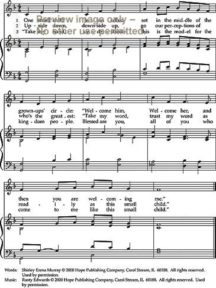
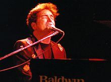

|
|
【小小嬰孩】 |
|
One small Child in a land of a thousand, |
千萬人中有一小小嬰孩，在今夜有救主的美夢，
|
|
https://www.riteseries.org/song/vf/1871/

|
|
|
|
|


小小嬰孩 One Small Child https://youtu.be/ODxJ898v3Ps -
David Meece - One Small Child Lyrics https://youtu.be/L9iVEF9H-PQ - One Small Child - arr. Mark Hayes
https://youtu.be/D7KbqPmvX_I
| Text: | One Small Child |
| Author: | David Meece |
| Tune: | ONE SMALL CHILD |
| Composer: | David Meece |
| Short Name: | David Meece |
| Full Name: | Meece, David, 1952- |
| Birth Year: | 1952 |
| Text Information | |
|---|---|
| First Line: | One small Child in a land of a thousand |
| Title: | One Small Child |
| Author: | David Meece |
| Meter: | Irregular meter |
| Language: | English |
| Publication Date: | 1997 |
| Topic: | Christ: Advent; Christ: Birth |
| Copyright: | © 1971 by Word Music (a div. of WORD MUSIC) |
| Tune Information | |
|---|---|
| Name: | ONE SMALL CHILD |
| Composer: | David Meece |
| Meter: | Irregular meter |
| Key: | e minor |
| Copyright: | ⓒ Copyright 1971 by Word Music (a div. of WORD MUSIC) |
| Notes: | After Fine - optional segue to "What Child Is This?" No transition is needed. |
David Meece 1952- Wikipedia
|
David Meece
|
|
|---|---|
|

David Meece, solo performance, Edmonton, Alberta
|
|
| Background information | |
| Born | May 26, 1952 |
| Origin | Humble, Texas |
| Genres | Contemporary Christian music |
| Occupation(s) | Singer, songwriter |
| Instruments | Piano, keyboards |
| Years active | 1976–present |
| Website |
davidmeece |
{kind=link}
David Meece (born May 26, 1952) is an American contemporary Christian musician who enjoyed success in the mid 1980s throughout the early 2000s with more than 30 Top 10 hits (several reaching No. 1).
Background[edit]
David Meece was raised in Humble, Texas, with an abusive, alcoholic father, Meece found solace in playing piano.[1] By his mid-teens he was touring in Europe and the US. He went on to study music at the Peabody Conservatory of Music where he met his wife, Debbie, who played viola.[1]
Meece is perhaps best known for his songs "We Are the Reason", which has been recorded more than 200 other artists and sung in several languages. [2] "Seventy-Times-Seven" peaked at No. 77 on The Australian charts.[3] Meece worked with Canadian songwriter and producer Gino Vannelli for his albums Chronology and Candle In the Rain.
Meece was requested to appear in Billy Graham crusades, among other outreach groups and television broadcasts.[1] He was inducted into the Christian Music Hall of Fame on June 14, 2008[4] and received the 2009 Visionary Award for the Inspirational Male Soloist category.[5] In November 2012, Meece was given a Lifetime Achievement Award for his body of work by the Artists Music Guild.[6]
Discography[edit]
- David (1976)
- I Just Call on You (1977)
- Everybody Needs a Little Help (1978)
- Are You Ready? (1980)
- Front Row (1982)
- Count the Cost (1983)
- 7 (1985)
- Chronology (1986)
- Candle In The Rain (1987)
- Learning To Trust (1989)
- Once in a Lifetime (1993)
- Odyssey (1995)
- Send Down The Rain (advertised for December 26, 1995, but never released)
- There I Go Again (2002)
- David Meece: The Definitive Collection (2007)
- Hands of Hope co-written by David L Cook and Bruce Carroll (2012) No. 1 on charts for 2 weeks[7]
- The Ultimate Collection (Word/Curb, 2014)
Music styles and use[edit]
Possibly due to his conservatory training, Meece uses pieces of classical piano works as intros or settings for many of his songs. For example, in the song "This Time" from the album Learning to Trust, the opening section of the song (as well as the bridge and ending tag) is from Frédéric Chopin's "Revolutionary Etude" (Op. 10, No. 12) in C minor. The introductory melody for "You Can Go", from the album 7, is taken from the Two-Part Invention No. 13 in A Minor (BWV 784) by Johann Sebastian Bach. (Because of the prevalent use of synthesizers, "You Can Go" is sometimes incorrectly connected to an advertisement in the early 1980s for Commodore 64 which used the Bach Invention played by a synthesizer.) Also, the song "Falling Down" from his album Count the Cost is based on a sonata by Mozart.
In 2012, Meece co-wrote the piece "Hands of Hope" with fellow performers, David L. Cook and Bruce Carroll. The song was a current day remake of "We Are the World" which featured many famous voices from the music industry. The song was recorded by the Charlotte Civic Orchestra and featured the voices of: Babbie Mason, Christy Sutherland, David L. Cook, Caroline Keller, Fantasia Barrino, Gayla Earlene, Joshua Cobb, Paul Zeaman and many of the former PTL Club singers from Jim and Tammy Faye Bakker's show. The song went No. 1 on the charts and remained there for two weeks.[8] The song was used as the theme song for Turning Point Centers for Domestic Violence.[9] On May 5, 2012, the National Academy of Television Arts and Sciences announced that the song "Hands of Hope" garnered Meece, Cook and Carroll the Emmy nomination for Best Arrangement/Composer of a Television Theme Song.[10]
https://en.wikipedia.org/wiki/David_Meece